|
 |
|||||
|
Kijimuna Plugin Installation by H.Ozawa Kijimuna is an Eclipse plugin to validate against Seasar syntax. Without Kijimuna, we would have to look at Java compilation errors to find syntactical errors. The easiest way to install Kijimuna is from Eclipse. But if you don't have an Internet connection, you're still able to install Kijimuna from the downloadable archive file by following this steps.
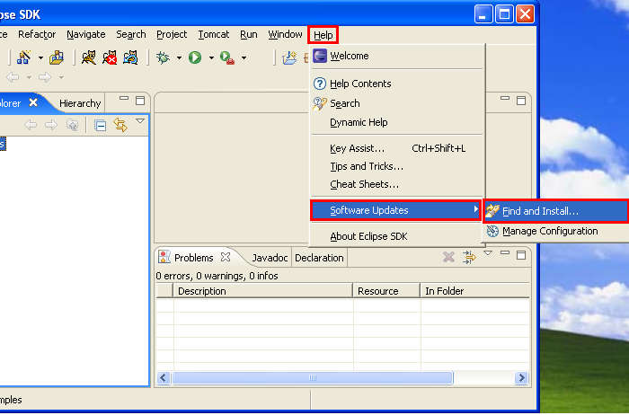 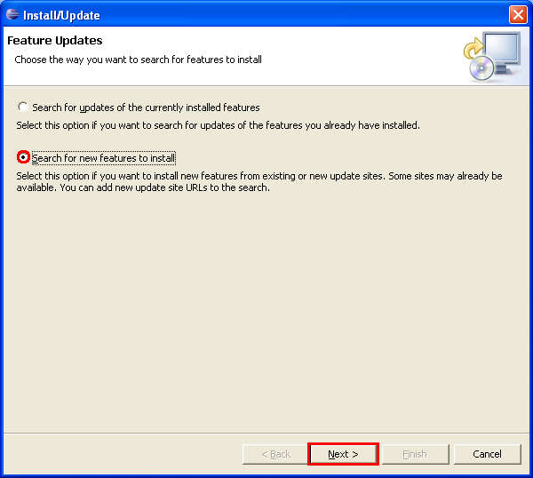 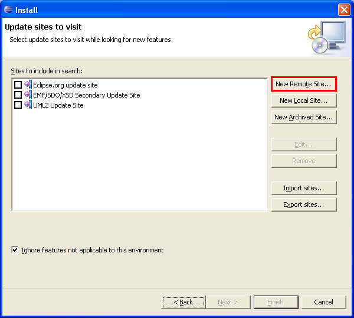 
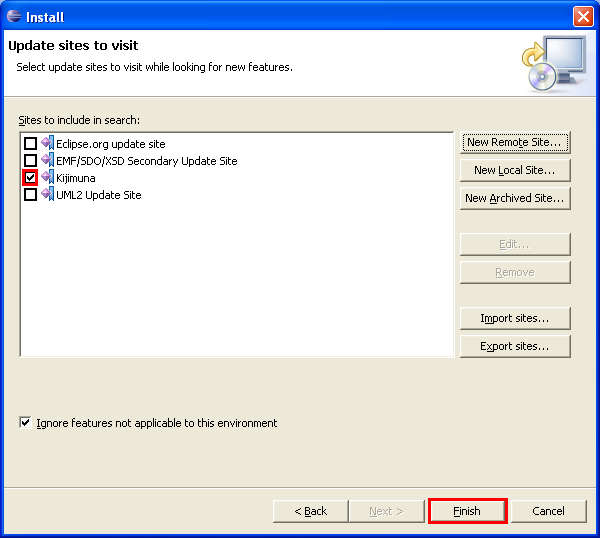 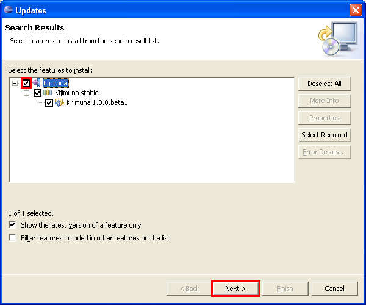 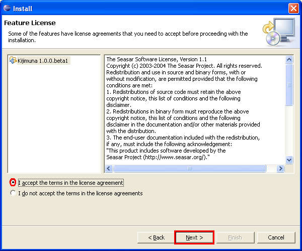 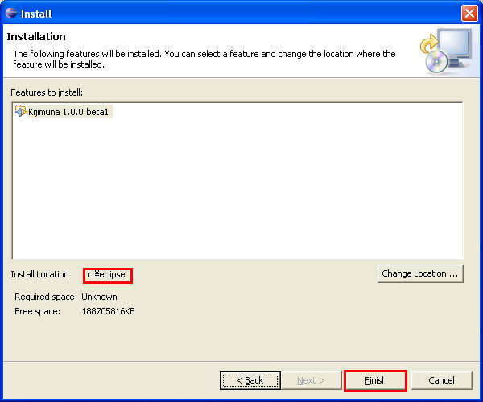 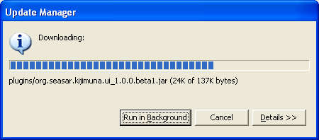 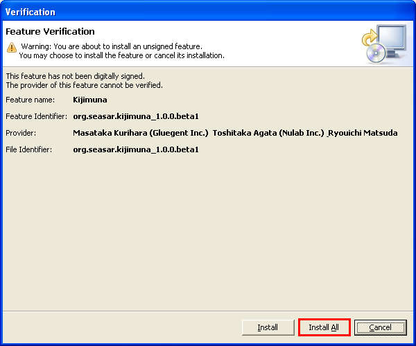 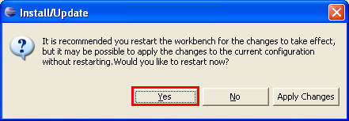 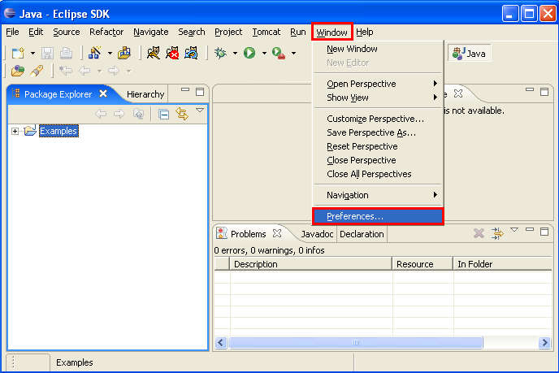 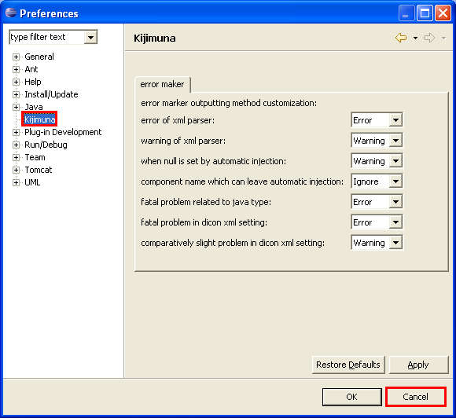 Content
|
|||||||
| Copyright©2005, H.Ozawa. All rights reserved. |